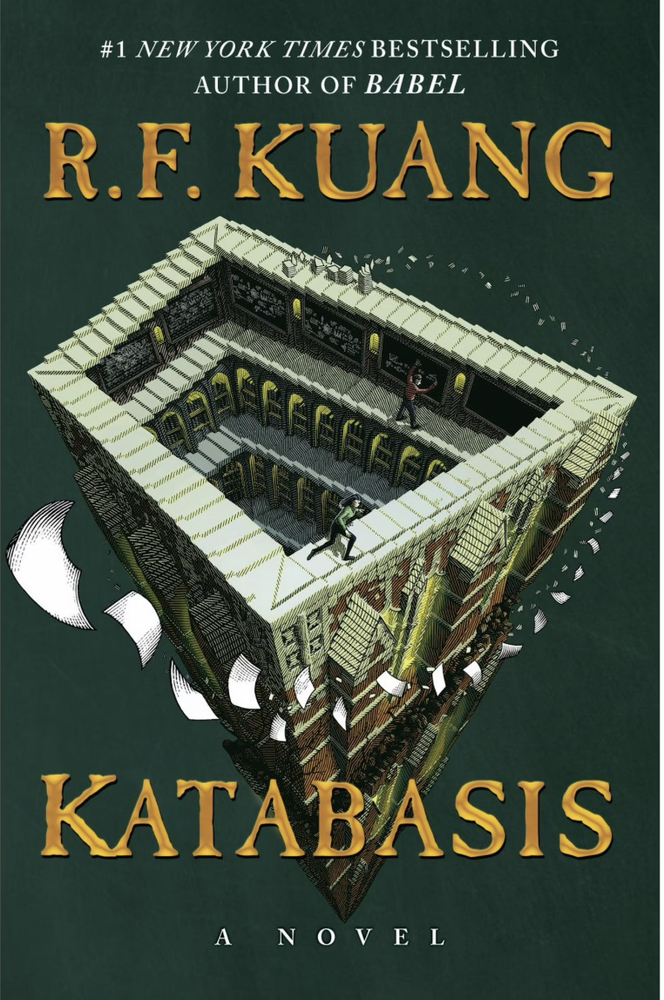
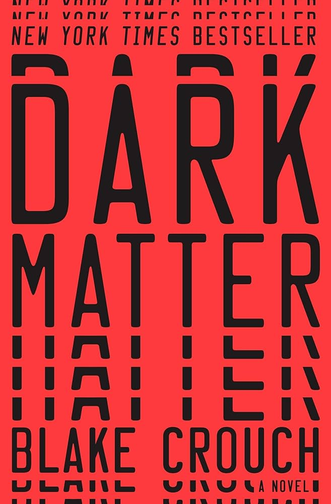
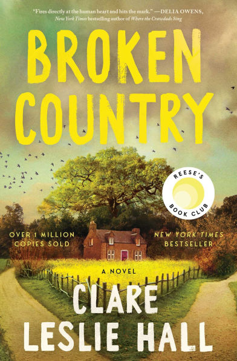
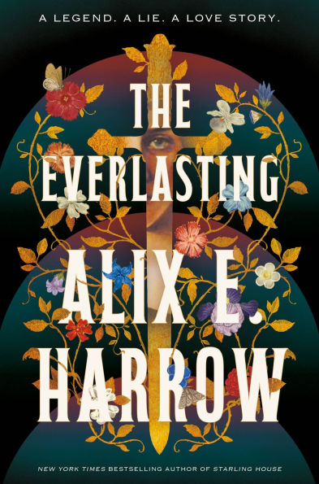
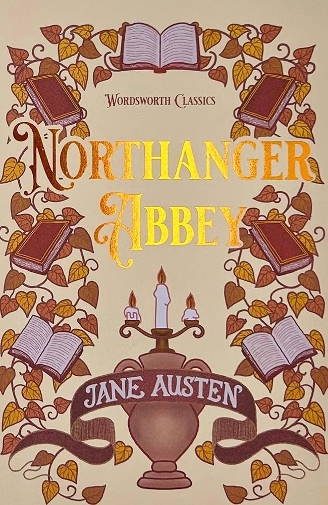
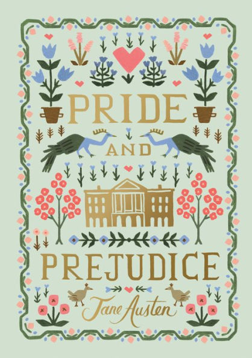
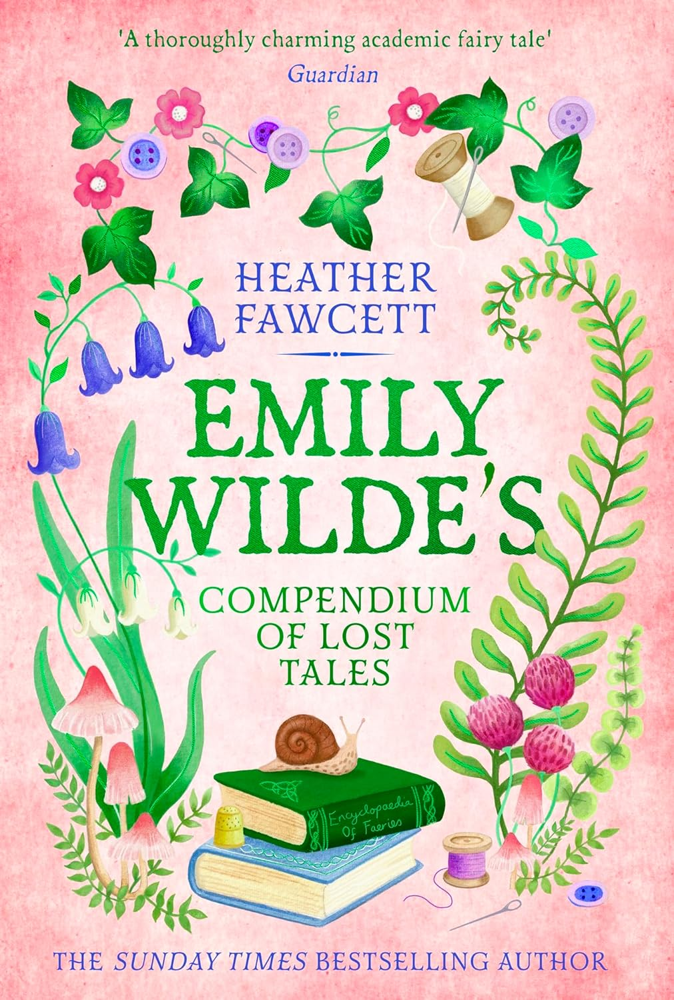
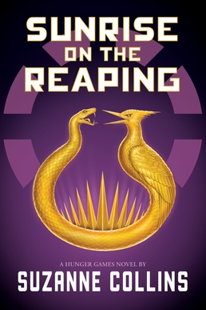
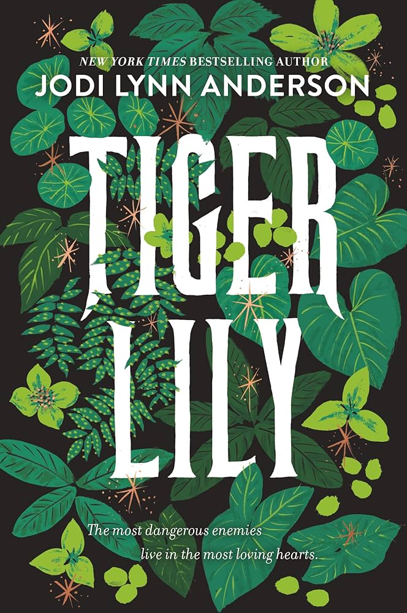

2025
Reflection
29 / 25 books
+4 books over goal 🎉
2025 was a complicated year, both in life and in reading. I almost didn’t make my reading goal, but a big push in the final months got me there (thanks to everyone who pushed me to get there!). More than anything though, this year felt like a period of figuring things out. I was learning a lot about myself, what I value, what I want to hold onto, and what I am ready to let go of. I understood parts of myself that I needed to release, and I also rediscovered parts of myself that I had forgotten I had access to. I think I also learned how to open myself back up again. To care deeply, even without certainty. Reading became a kind of anchor through all of that.
Here are some of the books that really stayed with me this year
Dark Matter felt like it found me at exactly the right moment. Beneath the science fiction, it is really a book about choice. About the lives we build and the ones we leave behind. Reading it while constantly questioning whether I was making the right decisions felt almost unsettling in the best way. It does not offer easy reassurance, but it suggests something that felt grounding to me. That fulfillment is not found in imagining alternate lives, but in committing to the one you are in.
Broken Country lingered in a different way. It is a story about love, but not in a polished or romanticized sense. It is messy, complicated, and shaped by the things people carry with them. Everyone in the story exists in a gray space, trying, failing, and acting from their own history. That felt honest to me. It felt like the kind of story that stays with you because it trusts you to sit with discomfort.
Katabasis ended up being my favorite book of the year. What struck me was not just the story, but how intentional it felt. The density and repetition did not feel excessive to me. They felt necessary. This is a descent, and it is supposed to feel heavy. More than anything, it captured something that is usually left unspoken. The psychological cost of ambition, especially within academic spaces. Alice felt painfully real to me in all her contradictions. Brilliant, insecure, driven, and difficult. It is not a comforting book, but that honesty is exactly what made it so impactful.
Looking back, I think I was less interested in reading for escape and more interested in reading to understand. Not every book worked for me, but each one felt like part of a larger process. By the end of the year, I felt different from where I started, and in a good way. I felt more grounded, more certain in what matters to me, and more at ease with myself.
5 Star Reads
These are my five star reads of the year. Reviews may contain spoilers, so proceed with caution. If you want the full list of everything I’ve read, you can find me on Goodreads.

Katabasis
Favorite of the year
I’ve been sitting on this review for a while, and for a lot of reasons. This book meant a great deal to me, which is why I was genuinely surprised to see such mixed reactions. Many of the criticisms I’ve seen don’t feel like flaws so much as deliberate choices, and I want to explain why.
One of the most common critiques is that Katabasis is “a book for academics.” This is the one criticism I partially agree with, but I don’t see why that should be considered a failure. Kuang is an academic, writing from a place of deep familiarity, and there is nothing inherently wrong with an author writing toward an audience they understand. Every book has an intended readership. Kuang’s simply happens to be people who have lived inside institutions that are hierarchical, punishing, and deeply invested in their own rituals. The fact that this book may not resonate equally with everyone does not mean it shouldn’t exist.
Another criticism that’s circulated, particularly within academic circles, concerns inaccuracies in academic language, especially regarding the British versus American PhD systems. Readers have pointed out things like the use of “advisor” instead of “supervisor,” or inconsistencies in how doctoral training is framed. This is especially notable because Kuang demonstrated a precise understanding of these distinctions in Babel. Because of that, I find it hard to believe these choices were accidental or the result of pandering to an American audience.
Instead, I read these moments as intentional flattening. Outside of academia, none of these distinctions matter. Whether a PhD takes four years or six, whether someone has an advisor or a supervisor, whether the system is nominally American or European, the lived experience is strikingly similar. We all enter, we all suffer under the same pressures, and many of us leave fundamentally changed in ways that institutions rarely acknowledge. The fact that academics are the ones most irritated by these “errors” feels almost like part of the point. These nuances matter deeply to us and almost not at all to anyone else.
The critique I disagree with most strongly is that the book is long-winded. To me, this misunderstands what Katabasis is doing. This is a descent narrative. It is a journey through hell, in conversation with texts like Dante’s Inferno and the myth of Orpheus. These stories are not brisk. They linger. They catalogue suffering. They force the reader to sit with repetition, exhaustion, and claustrophobia. Kuang’s detailed rendering of each level felt not indulgent but necessary. Hell is not meant to be efficient.
Beyond responding to critiques, what Katabasis does exceptionally well is give shape to something that is usually invisible: the psychic cost of ambition inside academia. Alice, in all her brilliance, cruelty, insecurity, and desperation, felt painfully real to me. I don’t think I’ve ever felt so seen by a character, especially one who is allowed to be both sympathetic and deeply unlikable. Through Alice and Peter, Kuang explores how institutions encourage competition over care, how love becomes transactional, and how self-worth gets entangled with external validation.
What makes this book feel like Kuang’s magnum opus is how seamlessly it weaves its ideas into its structure. This is not just a novel about academia; it is a novel that behaves like it. It is demanding, relentless, intellectually dense, and emotionally draining in ways that mirror the very systems it critiques. The descent is not only mythological but institutional and psychological. By the end, what’s left is not triumph but reckoning.
Katabasis isn’t trying to be comforting or accessible in the traditional sense. It’s trying to be honest. For those of us who have walked similar paths, that honesty feels devastating and necessary.

Dark Matter
I’ve been sitting on this review for days. Every time I try to put words down, I end up staring at the screen, unsure how to explain why this book affected me so deeply. On the surface, Dark Matter is excellent for all the obvious reasons: the plot is gripping, the writing is sharp, and the concept is both ambitious and well executed. But I don’t think that’s the full reason I loved it as much as I did.
More than anything, this book found me at exactly the right moment. Beneath the science fiction framework, Dark Matter is really a meditation on choice. A question of how we live with the decisions we make and how we define happiness in the wake of them. It asks what it means to commit to a life, to accept the version of yourself shaped by paths taken and paths abandoned.
Reading this in my twenties, while constantly questioning whether I’m making the “right” choices, felt almost unsettling in the best way. The book doesn’t offer easy reassurance, but it does suggest something grounding: that fulfillment isn’t found by endlessly imagining alternate lives, but by staying present and remembering what truly matters to you. Sometimes, the answer isn’t certainty, but rather it’s continuing forward with intention.

Broken Country
I truly loved Broken Country. It is a book that stayed with me long after I finished it, and one that has grown richer in my mind. This is an ideal book for books clubs, in my opinion.
Something that stood out to me was the characterization of Beth. She is complex in a way that feels honest rather than polished. She carries contradictions, makes imperfect choices, and is shaped by the things that have happened to her in ways that feel painfully real. I loved seeing a female character written with this much care.
At its core, this book is about love and what we are willing to do for the people we love. Not in a romanticized way, but in a messy and sometimes uncomfortable one. The characters carry trauma with them, and that trauma shows up in their decisions, for better and for worse. Although love here is saving and redemptive, it is also complicated, heavy, and deeply human.
What I appreciated most is that there are no clear heroes or villains in this story. Everyone is trying, failing, hurting, and acting from their own history. That moral ambiguity is what makes the book feel so real. Life rarely offers clean lines between right and wrong, and Broken Country understands that. Even Frank, whom I loved deeply, exists in that gray space, which only made him feel more human to me.
This is a novel that trusts the reader to sit with discomfort and ambiguity, and in doing so, it captures something very true about love, grief, sharing that with others and the people we become while carrying it.

The Everlasting
I truly loved The Everlasting. This book is remarkably clever. It is a work of political fiction that hides its sharpest insights inside a beautiful, lyrical love story, and the balance between the two is handled with so much skill. I honestly do not think I can overstate how smart this book is.
At its core, the novel asks how our world is shaped by the stories we inherit. The stories we are told, the ones repeated until they harden into truth. How much of a country is a physical place, and how much of it is mythology? Are there ever truly heroes in the conquest of land, or just narratives that justify what has already been taken? These questions are woven into the story in a way that feels organic rather than didactic, which makes them linger long after you finish reading.
I also do not want to diminish the power of the love story at the center of the book. The Everlasting does something really compelling by placing two very different characters together and letting a story of conflict and unraveling grow out of their relationship. Their love becomes a lens through which we see loyalty, belief, and the cost of choosing one story over another.
I loved everything about this book. The writing, the characterization, and the ideas it wrestles with all work together beautifully. This is a novel that feels both intimate and expansive, and I cannot recommend it enough.

Northanger Abbey
Northanger Abbey is a short novel that packs an astonishing literary punch, and I don’t think it gets nearly enough credit. From Henry Tilney’s wit to Catherine Morland’s naïveté and genuine kindness, from the Thorpes’ odiousness to Eleanor Tilney quietly living out her own Gothic novel on the side, the characters are vivid, funny, and deeply intentional. The book is playful and light on its feet, but it is also far more self-aware than it is often given credit for.
What elevates the novel most for me is Austen’s narrator. The narrator is not content to simply tell a story, but instead steps forward repeatedly to speak directly to the reader, especially when it comes to defending novels and the people who read them. Austen openly mocks the cultural tendency to dismiss novels as frivolous or inferior, particularly when compared to histories or essays written by men. In doing so, she exposes the hypocrisy of a literary culture that consumes fiction eagerly while pretending to look down on it.
These moments feel remarkably modern. Austen insists that novels are not only entertaining but also intellectually and emotionally valuable. She frames them as spaces where insight, imagination, and moral understanding are cultivated, rather than as guilty pleasures to be apologized for. The narrator’s tone is sharp, confident, and unapologetic, and it becomes clear that this defense is not ironic or half-hearted. Austen genuinely believes in the novel as an art form and uses Northanger Abbey to argue for its legitimacy from within the genre itself.
What I find especially compelling is that this defense of novels is intertwined with Catherine’s story. Catherine’s love of Gothic novels is often treated as evidence of her innocence or foolishness by other characters, yet the narrator never fully condemns her for it. Instead, Austen suggests that the problem is not imagination, but a society that fails to teach young women how to interpret the stories they are given. The novel becomes both a satire of Gothic excess and a quiet defense of reading as a formative, even empowering, experience.
This is what makes Northanger Abbey feel so rich despite its brevity. It is funny and charming, but it is also a meta-commentary on storytelling itself. Austen is not just telling a coming-of-age story. She is staking a claim for the novel as a serious literary form and doing so with humor, confidence, and a narrator who knows exactly what she is doing. I really love this book!
Atmosphere
Atmosphere was incredible. The vibe and the emotion pulled me in right away, and the whole book reminded me why I love space in the first place. It captured that feeling of looking up and wanting to know more, that mix of wonder and curiosity that makes humanity so drawn to the unknown. At the same time, the story felt very grounded and very human. It explored love, connection, and the relationships that give our lives meaning, while also shining a light on the experiences of women in science in a way that felt honest and powerful.
My favorite part was the relationship between Joan and her niece. Their bond felt so tender and real, and it added a warmth to the story that stayed with me long after I finished. It actually made me want to learn more about space. I loved the context, the themes, and the feeling the book left me with.

Pride and Prejudice
Rereading Pride and Prejudice always feels like returning to a book that understands people better than most modern novels do. Every time I come back to it I am reminded why it has stayed a classic for so long. What struck me most on this reread is how romantic Lizzie truly is. She has a reputation for being sharp and practical, but beneath that wit is someone who believes deeply in love, in integrity, and in choosing a partner who matches her mind and spirit. It is easy to forget that she is both rational and romantic at once, and that balance is part of what makes her feel so real but is also a good reminder for me that humans can be both.
What I admire about Austen is how she allows her characters to grow. There is a moment in the story when both Lizzie and Darcy are confronted with their own flaws, and instead of staying static they change. They choose to become better people. Austen gives them the dignity of real self-reflection before they come back to each other, and that makes their relationship feel earned rather than inevita
Reading it again reminded me how timeless Austen’s insights are. She captures pride, misunderstanding, vulnerability, and transformation with a clarity that still resonates today. It is a novel that rewards you every time you revisit it, and it left me once again in awe of how central romantic love is to our story as humans.

Emily Wilde's Compendium of Lost Tales

Sunrise on the Reaping
